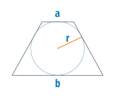

Радиус вписанной окружности в трапецию
Трапеция является несколько нестандартной фигурой среди
четырехугольников. Она не является правильным
многоугольником, однако обладает рядом отличительных
свойств, среди которых – возможность вписать в равнобокую
трапецию окружность. Это обусловлено тем, что для
четырехугольников действует правило, согласно которому в
него можно вписать окружность, если суммы его
противоположных сторон равны. Не каждая трапеция соблюдает
это правило, но если в нее все-таки вписана окружность,
значит, сумма ее оснований равна сумме боковых сторон.
Поскольку радиусы окружности, опущенные на основания
трапеции, находятся по отношению к ним под прямым углом,
следовательно, они совпадают с высотой трапеции.
Следовательно, не зная высоты, можно вычислить радиус окружности, вписанной в трапецию, через основания:
Следовательно, не зная высоты, можно вычислить радиус окружности, вписанной в трапецию, через основания:
где a, b — основания трапеции.